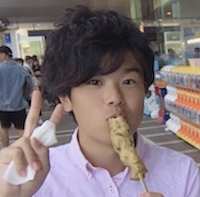

よこしん
横山真也
チーム: ロマ研
セクション: 支部長
学部: スポーツ科学部
出身地: 東京都
最寄駅: 西武新宿線 武蔵関
誕生日: 4月5日
好きなもの: ドライブ サッカー 古着
嫌いなもの: トマト 梅干し
趣味: ドライブ,赤西仁のBlu-rayをみること,やったことないスポーツをやること
漢字1文字で自分を表すと:達

りく
鈴木陸
チーム: アオハル
セクション: 副支部長/OC長
学部: 政治経済学部
出身地: 千葉県柏市
最寄駅: 北柏
誕生日: 9月9日
好きなもの: バスケ、漫画、プロ野球(巨人ファンだよ)
嫌いなもの: なす、かぼちゃ、玉ねぎ
趣味: バスケ、プロ野球観戦
漢字1文字で自分を表すと:普
けんた
酒井健太
チーム: しまじろう
セクション:VC
学部:教育学部
出身地:東京の東村山
最寄駅:久米川
誕生日:6/20
好きなもの:おいしい食べもの
嫌いなもの:まずい食べものと高いところ
趣味:歩くことと本を読むこと！
漢字1文字で自分を表すと:太